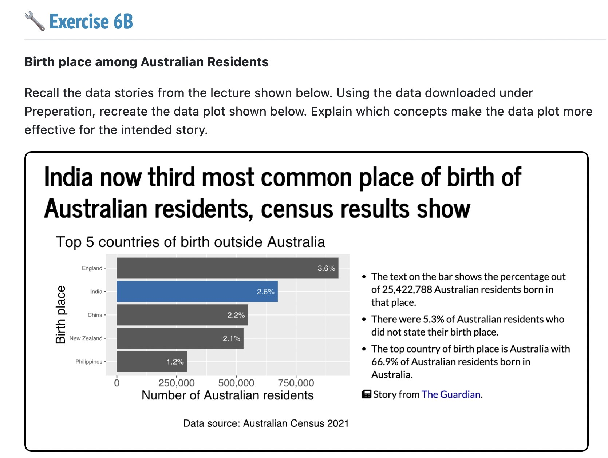
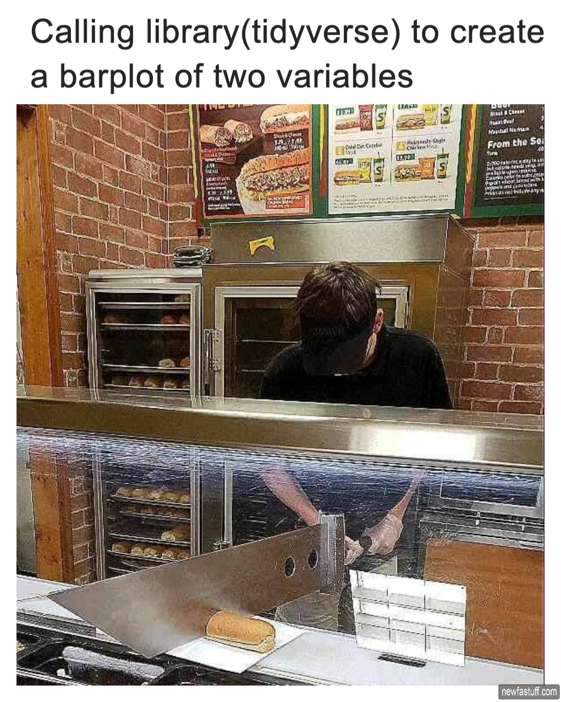
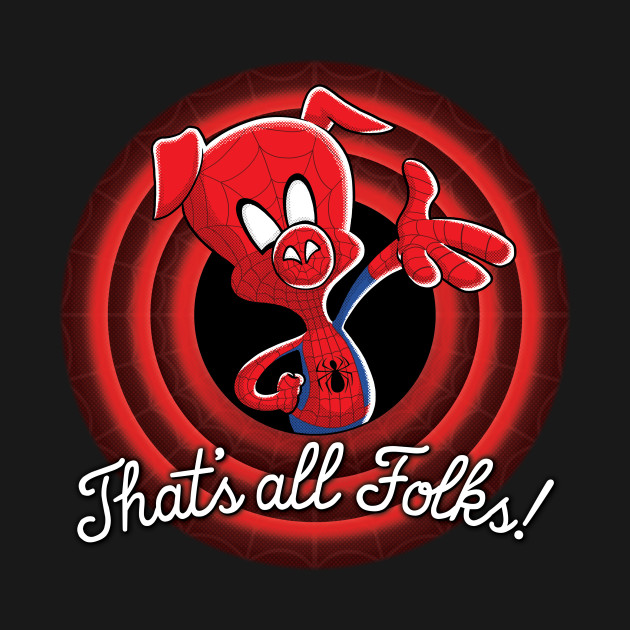

Meet John
He just arrived to the Communicating with Data tutorial a bit late and realized that he has forgotten his laptop.

He just arrived to the Communicating with Data tutorial a bit late and realized that he has forgotten his laptop.
He looks up at the Main Display to see the following task.

This would need a laptop with R running on it…
But,
He has brought his tab that has a web browser on it though.
Can he make it through the tutorial?

John decides to download the dataset from the tutorial website and uploads it to the file explorer in webR
Note
You can avoid the download and upload steps by running download.file and specifying the URL and download location. When in doubt run getwd() to ensure you are in the right folder.

John tries to run library(tidyverse) by instinct only to find out that tidyverse needs to be installed.
Note
Not all packages that you are used to is available in webR. You can check the available packages available.packages(repos="https://repo.r-wasm.org/", type="source")
or by checking out the Github page of webR
https://github.com/r-wasm/webr-repo/blob/main/repo-packages.
You can install packages by running webr::install("tidyverse"). Or you can simply run library(tidyverse) and webR will ask whether to install the package.
After installing the packages he dives right into writing the following code.
Note
The data processing speed depends on the device that he is using to access the webR site, in this case a tab
plot()data |>
ggplot(aes(x = count, y = birth, fill = birth)) +
geom_bar(stat = "identity", show.legend = FALSE) +
scale_fill_manual(
values = c("darkgray", "darkgray", "darkgray","navy", "darkgray")
)+
labs(
title = "India now second... ",
x = "Num of Aussies",
y = "Birth Place",
caption = "Data Sauce"
)It’s R running on a web browser!
But doesn’t Shiny let us show R command output on a web page?
Executes R commands on the client browser through WebAssembly
Executes R commands on a dedicated server machine using the R interpreter
Wait, hol’ up… What is WebAssembly?
Simply put, It is low level programming instruction format (the kind that computers understand) that works on top of a virtual machine inside web browsers.
By compiling R and it’s ecosystem of packages into this instruction format (web browser tongue), we can run R commands on this virtual machine inside the web browser!
There’s a quarto extension that allows you to have webR inside your Quarto documents!
You can install the extension by running the following
Caution
The above Quarto extension works nicely with Quarto documents but for revealjs presentations there are a few extra steps that are needed.
Head on over to https://webr-hacky-hour.netlify.app/ and try it out now!
Warning
A bit of Javascript knowledge will be needed to work through this!
Warning
You would need to compile the package into a format that can support WASM, which would require a development environment running Linux. There’s a bit of learning curve here, so tread carefully.
